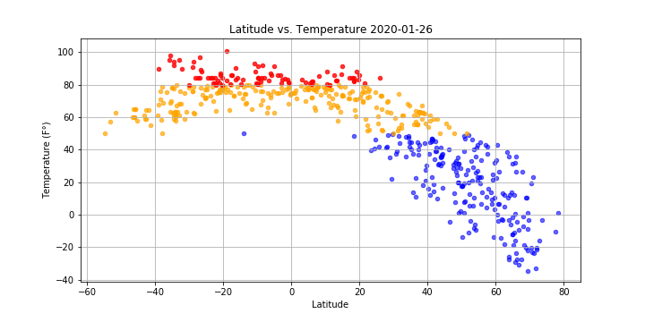

Summary: Latitude vs. X
This project was aimed at creating a Python script to visualize the weather of 500+ cities across the World of varying distance from the equator. The data was pulled from OpenWeatherMap using API. The following analysis have been conducted and visualized:
- Temperature (F) vs. Latitude
- Humidity (%) vs. Latitude
- Cloudiness (%) vs. Latitude
- Wind Speed (mph) vs. Latitude

These and other weather analysis was used to determine the location of the upcoming vacation. This web-page provides the source data of the cities in table format and the visualization of different weather parameters against Latitude.
Visualizations